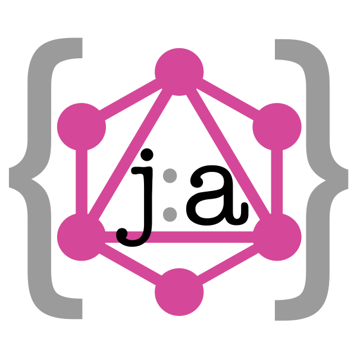

jagql
A resource driven NodeJS framework to set up a {json:api} + GraphQL endpoint in record time.


Motivation
Let us look at these great articles written by some very experiences developers -
- Phil Sturgeon says if you use json:api you do not need GraphQL
- Bill Doerrfeld writes about the benefits of json:api
- Jorge says json:api is a simple alternative to GraphQL
- Jeremy Sherman says he is not impressed by json:api and GraphQL is better
- Brandur says GraphQL is the next frontier in Web Developement
If you ask me, I'd say -
And in fact, some of the most used public APIs like Github have both REST and GraphQL.
jagql lets you build a backend with both {json:api} and GraphQL support really really fast.